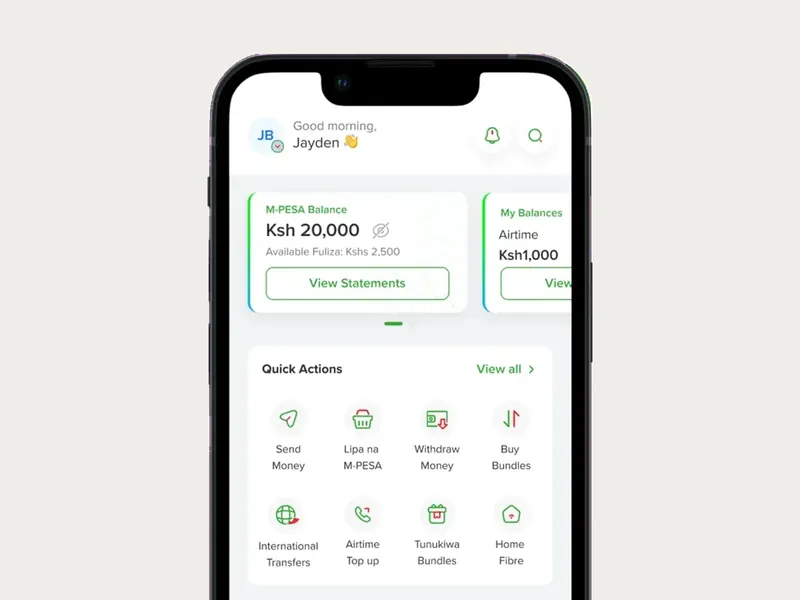
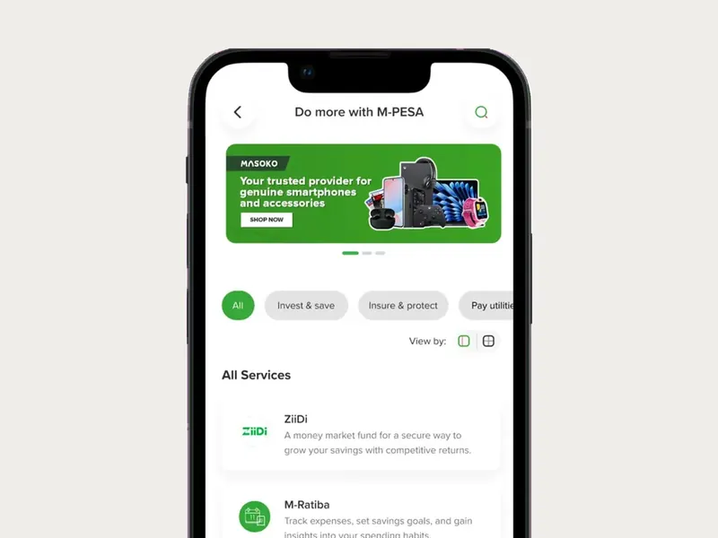
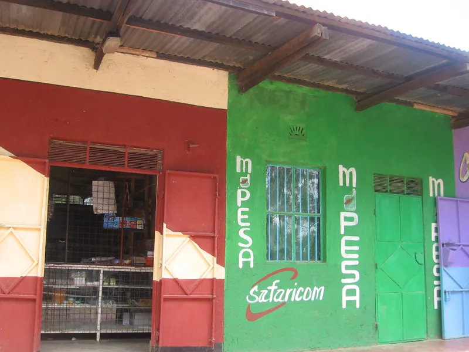

M-PESA Africa
AI transformation of mobile money and financial services, for 100M+ customers in eight African markets.



- Role
- Managing Executive: Artificial Intelligence, reporting to the CEO
- Scale
- 100M+ customers in eight markets; $2B+ revenue
- Now
- End-to-end redesign of work under way across the group’s markets
I lead AI transformation across Vodacom FinTech Group, including M-PESA, reporting to the CEO. I set the direction, from single AI tasks to whole chains of work redesigned across functions, and I am building the AI Center of Excellence that holds every change to one standard. I also work hands-on with the teams, building the first versions of each redesigned chain of work.
What I decided
Set the strategy: from units of work to systems of work
A unit of work is one task in one function, done faster with AI. A system of work is the whole chain of steps, across functions, that a customer or a colleague waits on. The chain is what we redesign.
Held AI to one standard: every check still runs
When AI changes work that moves people’s money, every check still runs, screening and fraud included. Legal, risk and compliance join from the start and keep their sign-off. AI assists people before it automates a step.
Judged each change by two results
Time end to end, against a comparison group working the old way, and value that finance signs off. Each workflow then ends in a decision: scale it, continue, narrow it or stop.
How it worked
Mobile money at scale, with most of the time spent waiting
Safaricom and Vodacom set up M-PESA Africa in 2020 to develop M-PESA, their mobile money service, as one platform. I own the AI roadmap for customer experience, revenue growth, risk, fraud and operational efficiency. I measure each workflow from the first request to the result, because most of its time is spent waiting between steps.
AI on one task changes little
AI that speeds up one task in one function leaves the handoffs around it as they were, so the customer still waits. We started there, with pilots inside single functions, and that work continues: it builds the skills and the proof.
The whole chain, redesigned across functions
We bring together the functions that share a chain of work, then redesign it with AI and automate it end to end. That move is under way across the group’s markets. Which workflows, and their results, stay internal while the work runs.
High-risk steps stay with a person
Steps with high compliance risk stay with a person. Legal, risk and compliance teams set the conditions for each change and keep their sign-off. Each market owns its results.
The people who will use it
The AI Center of Excellence sets shared standards for AI across eight markets and trains the people who use them: Kenya, Tanzania, the DRC, Mozambique, Lesotho, Ethiopia, Egypt and South Africa.
A drawing of the idea.